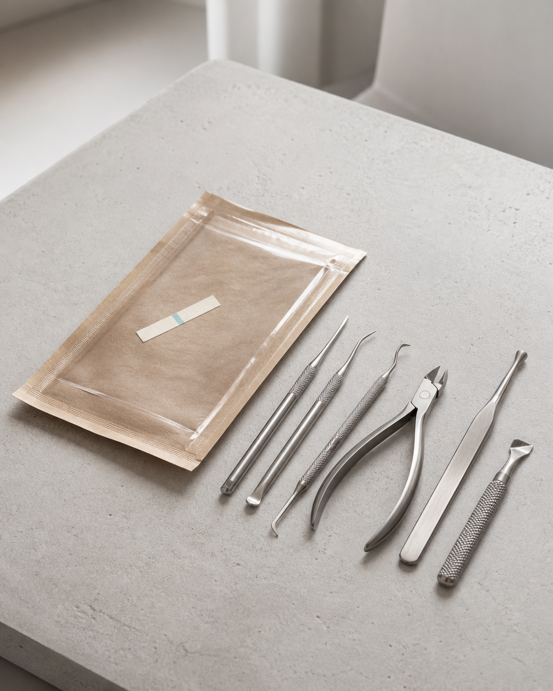

Дипломированный подолог, стаж 24 года
Мария
Колесник
Профессиональный медицинский педикюр с индивидуальным подходом.
Квалифицированная помощь при любых проблемах стоп и ногтей.
Забота о здоровье, эстетике и комфорте клиентов.

Почему стоит выбрать педикюр именно у меня?
Запишитесь сейчас — ваши ноги скажут «спасибо»!

✨ Услуги профессионального педикюра
Комплексный уход
Профилактический аппаратный педикюр3000₽
Аппаратная обработка 10 ногтевых пластин + стопы без боли. Удаление огрубевшей кожи, профилактика вросших ногтей. Идеально для регулярного ухода.
Медицинский аппаратный педикюр3500₽
Профессиональная обработка при гиперкератозе, диабетической стопе, псориазе. Безопасно, стерильно, с индивидуальным подбором средств для домашнего ухода.
Классический педикюр2500₽
Обработка стоп бритвенным станком + 10 ногтевых пластин. Техника выполнения в лучших традициях классической школы педикюра.
Комбинированный педикюр3000₽
Сочетание аппарата + классики. Индивидуальный подход к каждой стопе.
Обработка ногтей
Профилактический аппаратный педикюр на здоровые ногти (обработка 10 ногтевых пластин,без стоп)2000₽
Медицинский аппаратный педикюр при патологии ногтей средней сложности (обработка 10 ногтевых пластин ,без стоп)2500₽
Обработка ногтевых пластин с онихомикозом.
Медицинский аппаратный педикюр при патологии ногтей высокой сложности (обработка 10 ногтевых поастин ,без стоп )3000₽
Обработка ногтевых пластин с онихомикозом.
Кожа стоп
Обработка кожи двух стоп (без патологий)1500₽
Для тех, кто ценит быстроту и ухоженный вид.
Обработка кожи с гиперкератозом, трещинами2000₽
Глубокое удаление натоптышей, проработка трещин, псориаз, ДС. Без обработки ногтей.
Локальная помощь
Удаление одной мозоли900₽
Стержневые, плоские, межпальцевые мозоли.
Обработка вросшего ногтя (1 зона)1000₽
Корректируем форму, снимаем воспаление.
Нитиноловая нить (большой палец)3000₽
Коррекция с помощью нитиноловой нити.
Нитиноловая нить (маленький палец)1500₽
Без боли, не влияет на образ жизни.
Расписание
- Рабочий день:
- Понедельник, пятница и суббота
- Время приема:
- 10:00, 12:00, 14:00, 16:00, 18:00
- Отпуск:
- Июль
О специалисте
Мария Колесник — дипломированный подолог с медицинским образованием (специальность «Сестринское дело»). Опытный мастер педикюра, оказывающий услуги с соблюдением медицинских стандартов и индивидуальным подходом к каждому клиенту.

Контакты
Я принимаю по понедельникам, пятницам и субботам. Просто оставьте контакты — и я сам свяжусь с вами для согласования удобного времени.
Записаться онлайнНаписать в MAX